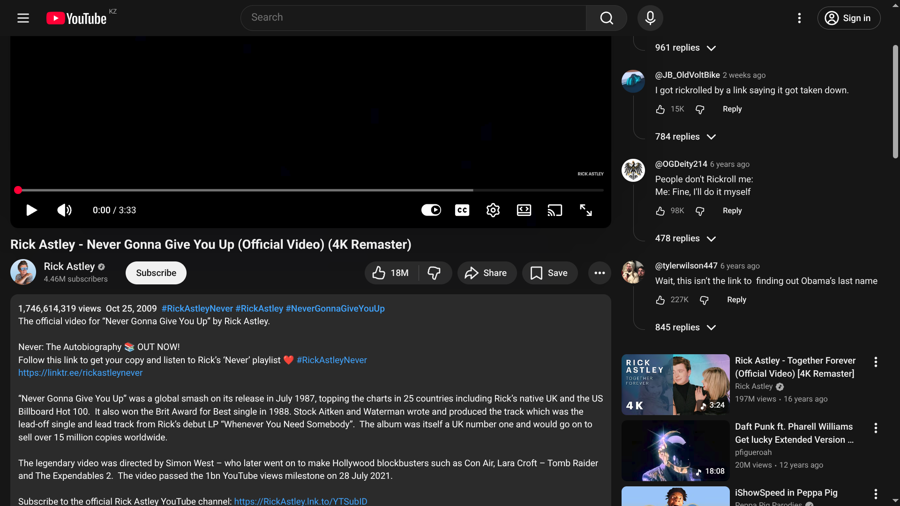

What It Does
On YouTube watch pages, the extension can move comments into the right panel. You can quickly toggle behavior from the popup or keyboard shortcut.
Toggle Options
- Sidebar: enable or disable right-side comments mode.
- Expand Description: auto-expand the description while sidebar mode is enabled.
- Show Recommended: choose whether recommended videos remain visible next to comments.
- Show Scrollbar: show or hide the comments scrollbar.
- Compact Comments: use tighter comment spacing for a denser layout.
Screenshots

